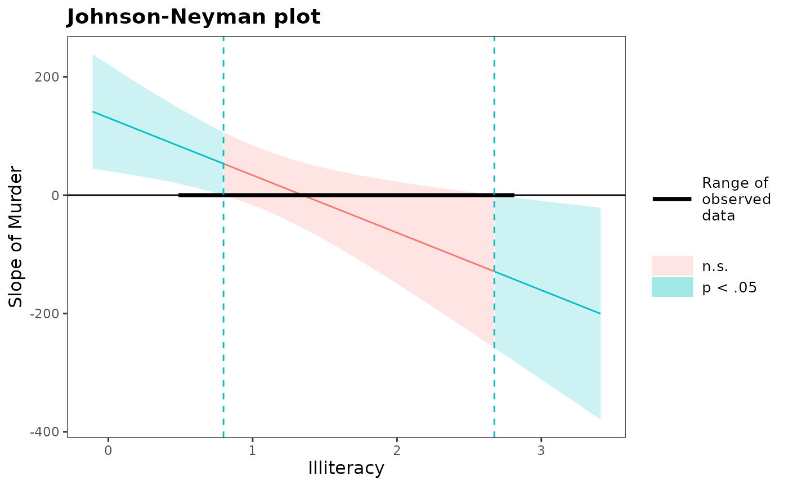

Calculate Johnson-Neyman intervals for 2-way interactions
Source:R/johnson_neyman.R
johnson_neyman.Rdjohnson_neyman finds so-called "Johnson-Neyman" intervals for
understanding where simple slopes are significant in the context of
interactions in multiple linear regression.
Usage
johnson_neyman(
model,
pred,
modx,
vmat = NULL,
alpha = 0.05,
plot = TRUE,
control.fdr = FALSE,
line.thickness = 0.5,
df = "residual",
digits = getOption("jtools-digits", 2),
critical.t = NULL,
sig.color = "#00BFC4",
insig.color = "#F8766D",
mod.range = NULL,
title = "Johnson-Neyman plot"
)Arguments
- model
A regression model. It is tested with
lm,glm, andsvyglmobjects, but others may work as well. It should contain the interaction of interest. Be aware that just because the computations work, this does not necessarily mean the procedure is appropriate for the type of model you have.- pred
The predictor variable involved in the interaction.
- modx
The moderator variable involved in the interaction.
- vmat
Optional. You may supply the variance-covariance matrix of the coefficients yourself. This is useful if you are using robust standard errors, as you could if using the sandwich package.
- alpha
The alpha level. By default, the standard 0.05.
- plot
Should a plot of the results be printed? Default is
TRUE. Theggplot2object is returned either way.- control.fdr
Logical. Use the procedure described in Esarey & Sumner (2017) to limit the false discovery rate? Default is FALSE. See details for more on this method.
- line.thickness
How thick should the predicted line be? This is passed to
geom_pathas thesizeargument, but because of the way the line is created, you cannot usegeom_pathto modify the output plot yourself.- df
How should the degrees of freedom be calculated for the critical test statistic? Previous versions used the large sample approximation; if alpha was .05, the critical test statistic was 1.96 regardless of sample size and model complexity. The default is now "residual", meaning the same degrees of freedom used to calculate p values for regression coefficients. You may instead choose any number or "normal", which reverts to the previous behavior. The argument is not used if
control.fdr = TRUE.- digits
An integer specifying the number of digits past the decimal to report in the output. Default is 2. You can change the default number of digits for all jtools functions with
options("jtools-digits" = digits)where digits is the desired number.- critical.t
If you want to provide the critical test statistic instead relying on a normal or t approximation, or the
control.fdrcalculation, you can give that value here. This allows you to use other methods for calculating it.- sig.color
Sets the color for areas of the Johnson-Neyman plot where the slope of the moderator is significant at the specified level.
"black"can be a good choice for greyscale publishing.- insig.color
Sets the color for areas of the Johnson-Neyman plot where the slope of the moderator is insignificant at the specified level.
"grey"can be a good choice for greyscale publishing.- mod.range
The range of values of the moderator (the x-axis) to plot. By default, this goes from one standard deviation below the observed range to one standard deviation above the observed range and the observed range is highlighted on the plot. You could instead choose to provide the actual observed minimum and maximum, in which case the range of the observed data is not highlighted in the plot. Provide the range as a vector, e.g.,
c(0, 10).- title
The plot title.
"Johnson-Neyman plot"by default.
Value
- bounds
The two numbers that make up the interval.
- cbands
A dataframe with predicted values of the predictor's slope and lower/upper bounds of confidence bands if you would like to make your own plots
- plot
The
ggplotobject used for plotting. You can tweak the plot like you could any other fromggplot.
Details
The interpretation of the values given by this function is important and not always immediately intuitive. For an interaction between a predictor variable and moderator variable, it is often the case that the slope of the predictor is statistically significant at only some values of the moderator. For example, perhaps the effect of your predictor is only significant when the moderator is set at some high value.
The Johnson-Neyman interval provides the two values of the moderator at which the slope of the predictor goes from non-significant to significant. Usually, the predictor's slope is only significant outside of the range given by the function. The output of this function will make it clear either way.
One weakness of this method of probing interactions is that it is analogous
to making multiple comparisons without any adjustment to the alpha level.
Esarey & Sumner (2017) proposed a method for addressing this, which is
implemented in the interactionTest package. This function implements that
procedure with modifications to the interactionTest code (that package is
not required to use this function). If you set control.fdr = TRUE, an
alternative t statistic will be calculated based on your specified alpha
level and the data. This will always be a more conservative test than when
control.fdr = FALSE. The printed output will report the calculated
critical t statistic.
This technique is not easily ported to 3-way interaction contexts. You could,
however, look at the J-N interval at two different levels of a second
moderator. This does forgo a benefit of the J-N technique, which is not
having to pick arbitrary points. If you want to do this, just use the
sim_slopes function's ability to handle 3-way interactions
and request Johnson-Neyman intervals for each.
References
Bauer, D. J., & Curran, P. J. (2005). Probing interactions in fixed and multilevel regression: Inferential and graphical techniques. Multivariate Behavioral Research, 40(3), 373-400. doi: 10.1207/s15327906mbr4003_5
Esarey, J., & Sumner, J. L. (2017). Marginal effects in interaction models: Determining and controlling the false positive rate. Comparative Political Studies, 1–33. Advance online publication. doi: 10.1177/0010414017730080
Johnson, P.O. & Fay, L.C. (1950). The Johnson-Neyman technique, its theory and application. Psychometrika, 15, 349-367. doi: 10.1007/BF02288864
See also
Other interaction tools:
probe_interaction(),
sim_margins(),
sim_slopes()
Author
Jacob Long <long.1377@osu.edu>
Examples
# Using a fitted lm model
states <- as.data.frame(state.x77)
states$HSGrad <- states$`HS Grad`
fit <- lm(Income ~ HSGrad + Murder*Illiteracy,
data = states)
johnson_neyman(model = fit, pred = Murder,
modx = Illiteracy)
#> JOHNSON-NEYMAN INTERVAL
#>
#> When Illiteracy is OUTSIDE the interval [0.80, 2.67], the slope of
#> Murder is p < .05.
#>
#> Note: The range of observed values of Illiteracy is [0.50, 2.80]
#>
